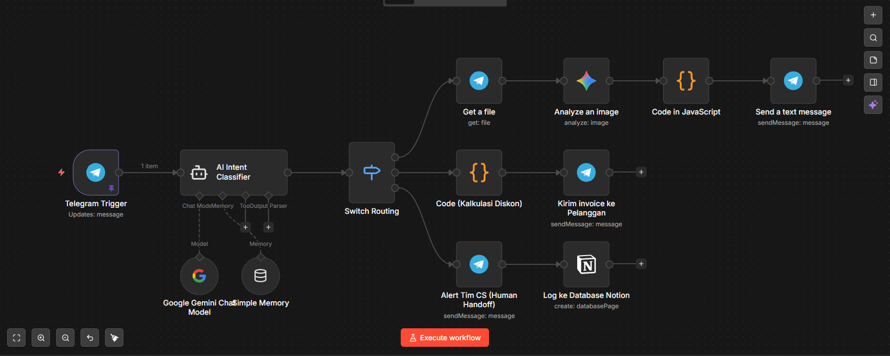

// project case study
Peran: AI Solutions Architect / Backend Automation Engineer
Merancang sistem orkestrasi Customer Support & Sales otonom yang mengintegrasikan model Multimodal AI (Generative Vision & Text) dengan alur kerja bisnis secara real-time. Sistem ini mendemonstrasikan penyelesaian masalah bisnis dunia nyata (real-world business value) melalui klasifikasi intensi pelanggan, diagnosis penyakit tanaman otomatis, pembuatan E-Invoice, hingga integrasi CRM.
Dalam industri agrikultur B2B, layanan pelanggan dan penjualan menghadapi tiga hambatan utama (bottleneck):
Membangun Peore AgroTech Bot berbasis Telegram yang bertindak sebagai "Satpam Cerdas", Ahli Agronomi, Kasir, dan Resepsionis CS secara serentak. Sistem ini ditenagai oleh workflow automation (n8n) dan Large Language Model (LLM) yang mampu memilah kelakuan pelanggan tanpa format kaku, mengekstrak data dinamis, dan mengeksekusi sistem pihak ketiga.
Pesan pengguna—baik berupa teks tunggal maupun teks beserta lampiran foto—dicegat di node pertama. LLM bertindak sebagai Dynamic Router yang mengklasifikasikan niat pengguna ke dalam 3 jalur pasti: DIAGNOSIS, QUOTATION, atau COMPLAINT, menggunakan Prompt Engineering berbasis logika.
Jika pengguna mengirimkan foto daun berpenyakit, sistem akan mengunduh ID File dari Telegram API dan mengirimkannya ke Google Gemini Vision. AI menganalisis kerusakan daun (contoh: serangan hama ulat) dan merespons dengan diagnosis serta rekomendasi produk pestisida spesifik di bawah 2.000 karakter agar kompatibel dengan limitasi Telegram.
Jika terdeteksi sebagai niat pembelian, alur dialihkan ke sistem kalkulasi Node JS. Sistem menghitung diskon dan menghasilkan E-Invoice dinamis berformat Markdown yang terlihat profesional langsung di layar percakapan Telegram.
Untuk jalur komplain, sistem tidak membalas dengan template robot. Keluhan pelanggan langsung diteruskan sebagai Alert ke Tim CS, sekaligus mengeksekusi Notion API untuk mencatat ID, Nama, dan Isi Komplain ke dalam database tabel (CRM) perusahaan secara persisten.
Mengatasi limitasi "Legacy Parse Mode" pada Telegram API, saya menyuntikkan Code Node (JavaScript) di tengah workflow. Node ini menggunakan Regular Expression (Regex) untuk menyucikan output AI dari karakter Markdown (**, _, #) yang tidak berpasangan, mencegah crash/error sistem pengiriman pesan.
Di bawah ini adalah blueprint orkestrasi yang memisahkan logika ke dalam tiga cabang eksekusi paralel.

Keterangan: Arsitektur Switch Routing n8n yang menghubungkan Telegram Trigger, Intent Classifier, Gemini Image Analyzer, Code Calculator, dan Notion Database Integration.
Ketangguhan sistem ini terletak pada fleksibilitas membaca pesan (meski hanya foto tanpa teks) dan kemampuan membersihkan data sebelum dikirim kembali ke user.
// 1. AI INTENT CLASSIFIER PROMPT (Penanganan Gambar tanpa Teks)
Analyze the input and classify the intent into exactly one of these categories: 'DIAGNOSIS', 'QUOTATION', or 'COMPLAINT'.
Input: {{ $('Telegram Trigger').item.json.message.text || $('Telegram Trigger').item.json.message.caption || '[User mengirimkan gambar tanpa teks]' }}
// 2. DATA SANITIZATION (JavaScript Node)
// Mencegah Telegram API Error (Bad Request: Can't parse entities)
for (const item of $input.all()) {
let rawText = item.json.content?.parts[0]?.text || "";
// Membersihkan tanda Markdown menggunakan Regex
let cleanText = rawText
.replace(/\*\*/g, '') // Menghapus bintang ganda (Bold)
.replace(/\*/g, '') // Menghapus bintang tunggal (Italic)
.replace(/__/g, '') // Menghapus garis bawah ganda
.replace(/_/g, '') // Menghapus garis bawah tunggal
.replace(/^#+\s/gm, ''); // Menghapus format Header
item.json.teks_bersih = cleanText;
}
return $input.all();
Sistem ini telah lulus Uji QA dengan hasil sempurna pada ketiga rute (*Routing*):
1. Bot mendiagnosis Daun Mangga berlubang (Chewing Pest).
2. Bot menerbitkan Quotation Rp 6.750.000 untuk Pupuk NutriGrow.
3. Bot mencatat komplain pupuk sobek ke Notion HRD.